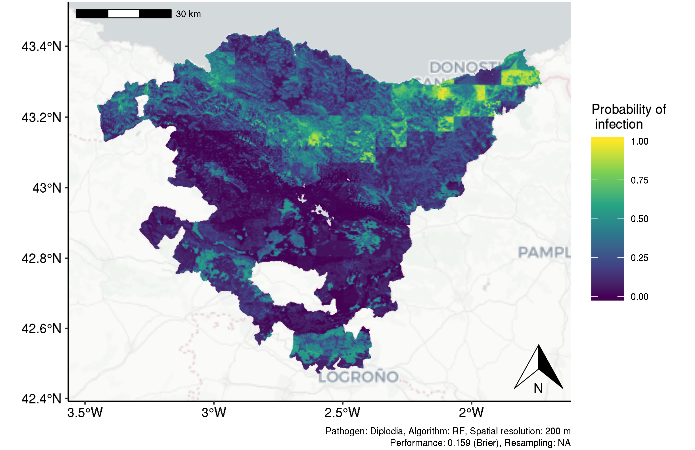
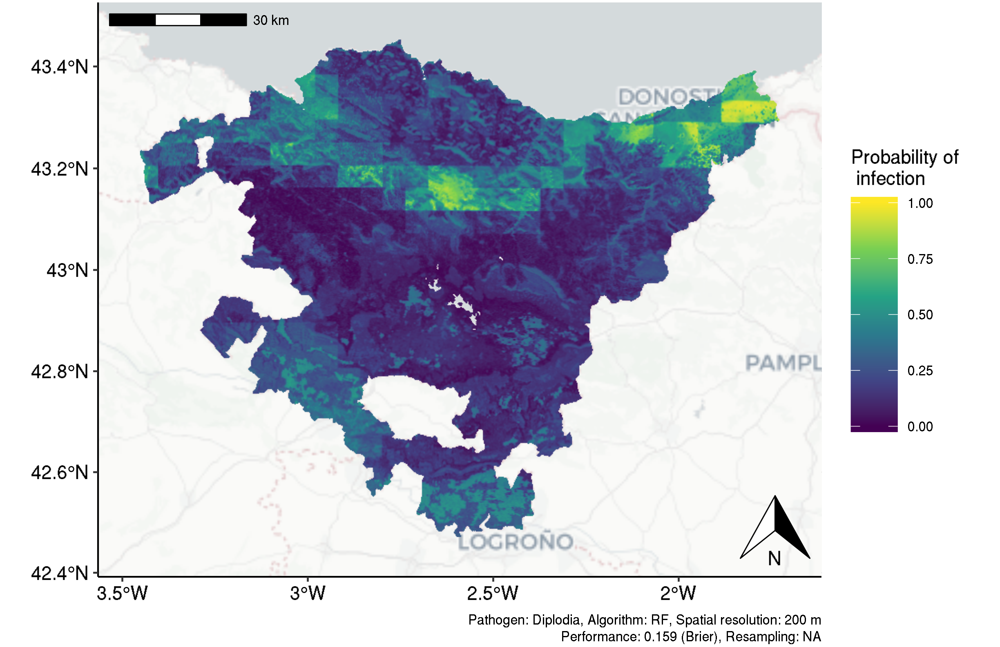
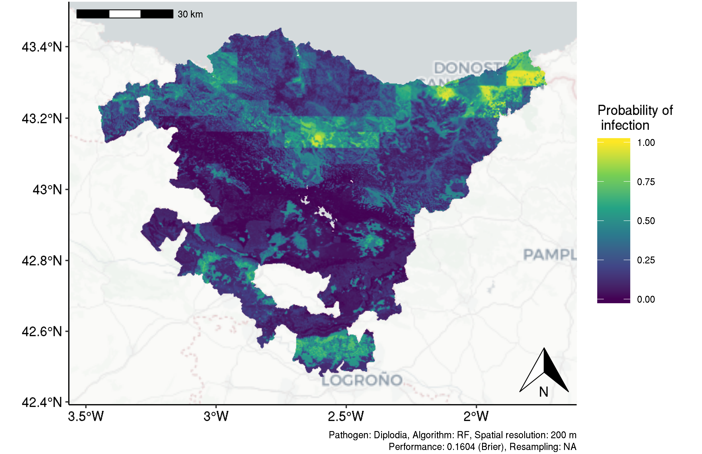

Last updated: 2019-11-03
Checks: 6 0
Knit directory: 2018-model-comparison/
This reproducible R Markdown analysis was created with workflowr (version 1.3.0). The Checks tab describes the reproducibility checks that were applied when the results were created. The Past versions tab lists the development history.
Great! Since the R Markdown file has been committed to the Git repository, you know the exact version of the code that produced these results.
Great job! The global environment was empty. Objects defined in the global environment can affect the analysis in your R Markdown file in unknown ways. For reproduciblity it’s best to always run the code in an empty environment.
The command set.seed(20190523) was run prior to running the code in the R Markdown file. Setting a seed ensures that any results that rely on randomness, e.g. subsampling or permutations, are reproducible.
Great job! Recording the operating system, R version, and package versions is critical for reproducibility.
Nice! There were no cached chunks for this analysis, so you can be confident that you successfully produced the results during this run.
Great! You are using Git for version control. Tracking code development and connecting the code version to the results is critical for reproducibility. The version displayed above was the version of the Git repository at the time these results were generated.
Note that you need to be careful to ensure that all relevant files for the analysis have been committed to Git prior to generating the results (you can use wflow_publish or wflow_git_commit). workflowr only checks the R Markdown file, but you know if there are other scripts or data files that it depends on. Below is the status of the Git repository when the results were generated:
Ignored files:
Ignored: .Rproj.user/
Ignored: .drake/
Ignored: code/07-paper/._files
Ignored: data/
Ignored: log/
Ignored: packrat/lib-R/
Ignored: packrat/lib-ext/
Ignored: packrat/lib/
Ignored: rosm.cache/
Ignored: tests/testthat/
Untracked files:
Untracked: packrat/src/clustermq/clustermq_0.8.8.tar.gz
Untracked: packrat/src/drake/40af919c816b5ddd61b5280dda72d35dfa54cf73.tar.gz
Untracked: packrat/src/drake/drake_7.3.0.tar.gz
Untracked: packrat/src/drake/drake_7.4.0.tar.gz
Untracked: packrat/src/drake/drake_7.7.0.tar.gz
Untracked: packrat/src/filelock/
Untracked: packrat/src/txtq/
Unstaged changes:
Modified: .Rbuildignore
Modified: .Rhistory
Modified: .Rprofile
Modified: .gitignore
Modified: .travis.yml
Modified: .vscode/settings.json
Modified: 2018-model-comparison.Rproj
Modified: DESCRIPTION
Modified: LICENSE
Modified: LICENSE.md
Modified: NAMESPACE
Modified: R/benchmark-functions.R
Modified: R/data-functions.R
Modified: R/helper-functions.R
Modified: R/mlr-functions.R
Modified: R/prediction-functions.R
Modified: R/visualization.R
Modified: README.md
Modified: _drake.R
Modified: _workflowr.yml
Modified: analysis/_site.yml
Modified: analysis/about.Rmd
Modified: analysis/benchmark-diplodia.Rmd
Modified: analysis/benchmark-pathogens.Rmd
Modified: analysis/bibliography.bib
Modified: analysis/index.Rmd
Modified: analysis/license.Rmd
Modified: analysis/prediction-pathogens.Rmd
Modified: analysis/vis-opt-paths.Rmd
Modified: analysis/vis-partitions.Rmd
Modified: analysis/vis-tuning-effects.Rmd
Modified: code/01-data/data.R
Modified: code/01-data/task.R
Modified: code/02-mlr-settings/learner.R
Modified: code/02-mlr-settings/param-set.R
Modified: code/02-mlr-settings/resampling.R
Modified: code/02-mlr-settings/tune_ctrl_mbo.R
Modified: code/02-mlr-settings/tuning.R
Modified: code/03-benchmark/aggregate-results.R
Modified: code/03-benchmark/benchmark.R
Modified: code/04-prediction/prediction.R
Modified: code/05-visualization/04_figures_03_methods_cross-validation.graphml
Modified: code/05-visualization/04_figures_03_methods_cross-validation_farbig.graphml
Modified: code/05-visualization/create_dataset_tables.R
Modified: code/05-visualization/vis-partitions.R
Modified: code/06-reports.R
Modified: code/07-paper/submission/3/Changelog.md
Modified: code/07-paper/submission/3/latex-source-files/Bibliography.bib
Modified: code/07-paper/submission/3/latex-source-files/ECOMOD-18-226-submission3.pdf
Modified: code/07-paper/submission/3/latex-source-files/cv_boxplots_final_brier-1.pdf
Modified: code/07-paper/submission/3/latex-source-files/elsarticle-template.synctex.gz
Modified: code/07-paper/submission/3/latex-source-files/opt-paths-RF-sp-vs-nsp-1.pdf
Modified: code/07-paper/submission/3/latex-source-files/spcv_nspcv_folds-1.pdf
Modified: code/07-paper/submission/3/latex-source-files/tuning_effects_all_models_mbo-1.pdf
Modified: code/07-paper/submission/3/reviewer1-answers.doc
Modified: code/07-paper/submission/3/reviewer1-answers.pdf
Modified: code/07-paper/submission/3/reviewer2-answers.doc
Modified: code/07-paper/submission/3/reviewer2-answers.pdf
Modified: code/99-packages.R
Modified: code/README.md
Modified: docs/.nojekyll
Modified: docs/CNAME
Modified: docs/figure/benchmark-diplodia.Rmd/cv_boxplots_final_brier-1.pdf
Modified: docs/figure/vis-opt-paths.Rmd/opt-paths-RF-sp-vs-nsp-1.pdf
Modified: docs/figure/vis-partitions.Rmd/spcv_nspcv_folds-1.pdf
Modified: docs/figure/vis-tuning-effects.Rmd/tuning_effects_all_models_mbo-1.pdf
Modified: exec-drake.R
Modified: inst/02_EDA.Rmd
Modified: inst/03_spatial_autocorrelation.Rmd
Modified: inst/README.md
Modified: inst/atlas-climatico-new.R
Modified: inst/clean-data-from-alex.Rmd
Modified: inst/comparison-old-to-new-data.Rmd
Modified: inst/data_new.rda
Modified: inst/rsync-jupiter.sh
Modified: man-roxygen/learner.R
Modified: man-roxygen/param_set.R
Modified: man-roxygen/resampling.R
Modified: man-roxygen/task.R
Modified: man-roxygen/tune_ctrl.R
Modified: man-roxygen/url.R
Modified: man/age_imp_preprocessing.Rd
Modified: man/age_imputation.Rd
Modified: man/atlas_climatico_download.Rd
Modified: man/atlas_climatico_preprocessing.Rd
Modified: man/benchmark_custom.Rd
Modified: man/create_dataset_tables.Rd
Modified: man/create_prediction_data.Rd
Modified: man/create_prediction_map.Rd
Modified: man/dem_download.Rd
Modified: man/elevation_preprocessing.Rd
Modified: man/extract_variables.Rd
Modified: man/extract_variables_v2.Rd
Modified: man/hail_download.Rd
Modified: man/lithology_download.Rd
Modified: man/lithology_preprocessing.Rd
Modified: man/mod_raw_data.Rd
Modified: man/ph_download.Rd
Modified: man/ph_preprocessing.Rd
Modified: man/pisr_preprocessing.Rd
Modified: man/precipitation_preprocessing.Rd
Modified: man/prediction_custom.Rd
Modified: man/remove_extract.Rd
Modified: man/save_plot_custom.Rd
Modified: man/slope_processing.Rd
Modified: man/soil_download.Rd
Modified: man/soil_preprocessing.Rd
Modified: man/task_custom.Rd
Modified: man/task_custom_prediction.Rd
Modified: man/temperature_preprocessing.Rd
Modified: man/tune_ctrl_mbo_30n_20it.Rd
Modified: man/tune_ctrl_mbo_30n_70it.Rd
Modified: man/tuning_wrapper_custom.Rd
Modified: man/vis_opt_path.Rd
Modified: man/vis_partitions.Rd
Modified: man/vis_tuning_effects.Rd
Modified: output/README.md
Modified: packrat/init.R
Modified: packrat/packrat.lock
Modified: packrat/packrat.opts
Modified: packrat/src/BBmisc/BBmisc_1.11.tar.gz
Modified: packrat/src/BH/BH_1.66.0-1.tar.gz
Modified: packrat/src/BiocGenerics/BiocGenerics_0.28.0.tar.gz
Modified: packrat/src/BiocManager/BiocManager_1.30.4.tar.gz
Modified: packrat/src/BiocVersion/BiocVersion_3.8.0.tar.gz
Modified: packrat/src/Cairo/Cairo_1.5-9.tar.gz
Modified: packrat/src/CodeDepends/CodeDepends_0.6.5.tar.gz
Modified: packrat/src/DBI/DBI_1.0.0.tar.gz
Modified: packrat/src/DT/DT_0.5.tar.gz
Modified: packrat/src/DiceKriging/DiceKriging_1.5.6.tar.gz
Modified: packrat/src/FNN/FNN_1.1.tar.gz
Modified: packrat/src/Formula/Formula_1.2-3.tar.gz
Modified: packrat/src/GREA/1a4695bce2233759298e4b831b48983996f6f5e1.tar.gz
Modified: packrat/src/GSIF/GSIF_0.5-5.tar.gz
Modified: packrat/src/Hmisc/Hmisc_4.2-0.tar.gz
Modified: packrat/src/LearnBayes/LearnBayes_2.15.1.tar.gz
Modified: packrat/src/MASS/MASS_7.3-50.tar.gz
Modified: packrat/src/Matrix/Matrix_1.2-14.tar.gz
Modified: packrat/src/ParamHelpers/ParamHelpers_1.11.tar.gz
Modified: packrat/src/R.matlab/R.matlab_3.6.2.tar.gz
Modified: packrat/src/R.methodsS3/R.methodsS3_1.7.1.tar.gz
Modified: packrat/src/R.oo/R.oo_1.22.0.tar.gz
Modified: packrat/src/R.utils/R.utils_2.7.0.tar.gz
Modified: packrat/src/R6/R6_2.2.2.tar.gz
Modified: packrat/src/RApiDatetime/RApiDatetime_0.0.4.tar.gz
Modified: packrat/src/RColorBrewer/RColorBrewer_1.1-2.tar.gz
Modified: packrat/src/RJSONIO/RJSONIO_1.3-1.1.tar.gz
Modified: packrat/src/RSAGA/RSAGA_1.3.0.tar.gz
Modified: packrat/src/RSQLite/RSQLite_2.1.1.tar.gz
Modified: packrat/src/Rcpp/Rcpp_1.0.0.tar.gz
Modified: packrat/src/RcppArmadillo/RcppArmadillo_0.9.200.5.0.tar.gz
Modified: packrat/src/RcppEigen/RcppEigen_0.3.3.5.0.tar.gz
Modified: packrat/src/Rttf2pt1/Rttf2pt1_1.3.7.tar.gz
Modified: packrat/src/XML/XML_3.98-1.16.tar.gz
Modified: packrat/src/abind/abind_1.4-5.tar.gz
Modified: packrat/src/acepack/acepack_1.4.1.tar.gz
Modified: packrat/src/addinslist/addinslist_0.2.tar.gz
Modified: packrat/src/anytime/anytime_0.3.3.tar.gz
Modified: packrat/src/aqp/aqp_1.17.tar.gz
Modified: packrat/src/askpass/askpass_1.1.tar.gz
Modified: packrat/src/assertthat/assertthat_0.2.0.tar.gz
Modified: packrat/src/backports/backports_1.1.2.tar.gz
Modified: packrat/src/base64enc/base64enc_0.1-3.tar.gz
Modified: packrat/src/base64url/base64url_1.4.tar.gz
Modified: packrat/src/bindr/bindr_0.1.1.tar.gz
Modified: packrat/src/bindrcpp/bindrcpp_0.2.2.tar.gz
Modified: packrat/src/bit/bit_1.1-14.tar.gz
Modified: packrat/src/bit64/bit64_0.9-7.tar.gz
Modified: packrat/src/blob/blob_1.1.1.tar.gz
Modified: packrat/src/boot/boot_1.3-20.tar.gz
Modified: packrat/src/brew/brew_1.0-6.tar.gz
Modified: packrat/src/broom/broom_0.5.1.tar.gz
Modified: packrat/src/callr/callr_3.1.0.tar.gz
Modified: packrat/src/cellranger/cellranger_1.1.0.tar.gz
Modified: packrat/src/checkmate/checkmate_1.8.5.tar.gz
Modified: packrat/src/classInt/classInt_0.2-3.tar.gz
Modified: packrat/src/cli/cli_1.0.0.tar.gz
Modified: packrat/src/cli/cli_1.1.0.tar.gz
Modified: packrat/src/clipr/clipr_0.4.1.tar.gz
Modified: packrat/src/clisymbols/clisymbols_1.2.0.tar.gz
Modified: packrat/src/clustermq/clustermq_0.8.6.tar.gz
Modified: packrat/src/coda/coda_0.19-1.tar.gz
Modified: packrat/src/colorRamps/colorRamps_2.3.tar.gz
Modified: packrat/src/colorout/cc5fbfa1f165bd4762588b463157a2688b116c5f.tar.gz
Modified: packrat/src/colorspace/colorspace_1.3-2.tar.gz
Modified: packrat/src/colourpicker/colourpicker_1.0.tar.gz
Modified: packrat/src/commonmark/commonmark_1.7.tar.gz
Modified: packrat/src/cowplot/cowplot_0.9.3.tar.gz
Modified: packrat/src/crayon/crayon_1.3.4.tar.gz
Modified: packrat/src/crosstalk/crosstalk_1.0.0.tar.gz
Modified: packrat/src/curl/curl_3.2.tar.gz
Modified: packrat/src/data.table/data.table_1.11.8.tar.gz
Modified: packrat/src/datapasta/datapasta_3.0.0.tar.gz
Modified: packrat/src/debugme/debugme_1.1.0.tar.gz
Modified: packrat/src/deldir/deldir_0.1-15.tar.gz
Modified: packrat/src/desc/desc_1.2.0.tar.gz
Modified: packrat/src/devtools/devtools_2.0.1.tar.gz
Modified: packrat/src/dichromat/dichromat_2.0-0.tar.gz
Modified: packrat/src/digest/digest_0.6.15.tar.gz
Modified: packrat/src/dismo/dismo_1.1-4.tar.gz
Modified: packrat/src/dplyr/dplyr_0.8.0.1.tar.gz
Modified: packrat/src/drake/drake_6.2.1.tar.gz
Modified: packrat/src/drake/drake_7.0.0.tar.gz
Modified: packrat/src/drake/drake_7.2.0.tar.gz
Modified: packrat/src/e1071/e1071_1.7-0.tar.gz
Modified: packrat/src/ellipsis/ellipsis_0.1.0.tar.gz
Modified: packrat/src/evaluate/evaluate_0.11.tar.gz
Modified: packrat/src/evaluate/evaluate_0.13.tar.gz
Modified: packrat/src/expm/expm_0.999-2.tar.gz
Modified: packrat/src/extrafont/extrafont_0.17.tar.gz
Modified: packrat/src/extrafontdb/extrafontdb_1.0.tar.gz
Modified: packrat/src/fansi/fansi_0.2.3.tar.gz
Modified: packrat/src/fansi/fansi_0.4.0.tar.gz
Modified: packrat/src/fastmatch/fastmatch_1.1-0.tar.gz
Modified: packrat/src/forcats/forcats_0.3.0.tar.gz
Modified: packrat/src/foreign/foreign_0.8-71.tar.gz
Modified: packrat/src/formatR/formatR_1.5.tar.gz
Modified: packrat/src/fs/fs_1.2.6.tar.gz
Modified: packrat/src/furrr/b4ad6addda5cb2fab4baf51434bdacf7a75a94ad.tar.gz
Modified: packrat/src/futile.logger/futile.logger_1.4.3.tar.gz
Modified: packrat/src/futile.options/futile.options_1.0.1.tar.gz
Modified: packrat/src/future.callr/future.callr_0.4.0.tar.gz
Modified: packrat/src/future/future_1.11.1.1.tar.gz
Modified: packrat/src/gbm/gbm_2.1.5.tar.gz
Modified: packrat/src/gdata/gdata_2.18.0.tar.gz
Modified: packrat/src/gdtools/gdtools_0.1.7.tar.gz
Modified: packrat/src/generics/generics_0.0.2.tar.gz
Modified: packrat/src/getPass/getPass_0.2-2.tar.gz
Modified: packrat/src/ggExtra/ggExtra_0.8.tar.gz
Modified: packrat/src/ggplot2/ggplot2_3.0.0.tar.gz
Modified: packrat/src/ggpubr/ggpubr_0.2.tar.gz
Modified: packrat/src/ggrepel/ggrepel_0.8.0.tar.gz
Modified: packrat/src/ggsci/ggsci_2.9.tar.gz
Modified: packrat/src/ggsignif/ggsignif_0.4.0.tar.gz
Modified: packrat/src/ggspatial/ggspatial_1.0.3.tar.gz
Modified: packrat/src/gh/gh_1.0.1.tar.gz
Modified: packrat/src/git2r/git2r_0.23.0.tar.gz
Modified: packrat/src/globals/globals_0.12.4.tar.gz
Modified: packrat/src/glue/glue_1.3.0.tar.gz
Modified: packrat/src/gmodels/gmodels_2.18.1.tar.gz
Modified: packrat/src/graph/graph_1.60.0.tar.gz
Modified: packrat/src/gridExtra/gridExtra_2.3.tar.gz
Modified: packrat/src/gstat/gstat_1.1-6.tar.gz
Modified: packrat/src/gtable/gtable_0.2.0.tar.gz
Modified: packrat/src/gtools/gtools_3.8.1.tar.gz
Modified: packrat/src/haven/haven_2.1.0.tar.gz
Modified: packrat/src/here/here_0.1.tar.gz
Modified: packrat/src/hexbin/hexbin_1.27.2.tar.gz
Modified: packrat/src/highr/highr_0.7.tar.gz
Modified: packrat/src/hms/hms_0.4.2.tar.gz
Modified: packrat/src/hrbrthemes/hrbrthemes_0.6.0.tar.gz
Modified: packrat/src/htmlTable/htmlTable_1.12.tar.gz
Modified: packrat/src/htmltools/htmltools_0.3.6.tar.gz
Modified: packrat/src/htmlwidgets/htmlwidgets_1.3.tar.gz
Modified: packrat/src/httpuv/httpuv_1.4.5.tar.gz
Modified: packrat/src/httr/httr_1.3.1.tar.gz
Modified: packrat/src/igraph/igraph_1.2.2.tar.gz
Modified: packrat/src/infuser/infuser_0.2.8.tar.gz
Modified: packrat/src/ini/ini_0.3.1.tar.gz
Modified: packrat/src/inserttable/2be448210a75cef4cac3b5d8f4a902ac99add1c6.tar.gz
Modified: packrat/src/intervals/intervals_0.15.1.tar.gz
Modified: packrat/src/jpeg/jpeg_0.1-8.tar.gz
Modified: packrat/src/jsonlite/jsonlite_1.5.tar.gz
Modified: packrat/src/kableExtra/kableExtra_1.1.0.tar.gz
Modified: packrat/src/kknn/kknn_1.3.1.tar.gz
Modified: packrat/src/knitr/knitr_1.20.tar.gz
Modified: packrat/src/knitr/knitr_1.23.tar.gz
Modified: packrat/src/labeling/labeling_0.3.tar.gz
Modified: packrat/src/lambda.r/lambda.r_1.2.3.tar.gz
Modified: packrat/src/later/later_0.7.5.tar.gz
Modified: packrat/src/lattice/lattice_0.20-35.tar.gz
Modified: packrat/src/latticeExtra/latticeExtra_0.6-28.tar.gz
Modified: packrat/src/lazyeval/lazyeval_0.2.1.tar.gz
Modified: packrat/src/leaflet/leaflet_2.0.2.tar.gz
Modified: packrat/src/lhs/lhs_0.16.tar.gz
Modified: packrat/src/listenv/listenv_0.7.0.tar.gz
Modified: packrat/src/lubridate/lubridate_1.7.4.tar.gz
Modified: packrat/src/lwgeom/1cd8e1bac5c3ae8ce56ef5368b8a87efa00e716d.tar.gz
Modified: packrat/src/lwgeom/lwgeom_0.1-6.tar.gz
Modified: packrat/src/magick/magick_2.0.tar.gz
Modified: packrat/src/magrittr/4104d6b593e409859befd0076ddc1abd0417d793.tar.gz
Modified: packrat/src/magrittr/magrittr_1.5.tar.gz
Modified: packrat/src/maptools/maptools_0.9-2.tar.gz
Modified: packrat/src/mapview/mapview_2.6.3.tar.gz
Modified: packrat/src/markdown/markdown_0.8.tar.gz
Modified: packrat/src/mco/mco_1.0-15.1.tar.gz
Modified: packrat/src/memoise/memoise_1.1.0.tar.gz
Modified: packrat/src/memuse/memuse_4.0-0.tar.gz
Modified: packrat/src/mgcv/mgcv_1.8-24.tar.gz
Modified: packrat/src/mime/mime_0.5.tar.gz
Modified: packrat/src/miniUI/miniUI_0.1.1.1.tar.gz
Modified: packrat/src/misc3d/misc3d_0.8-4.tar.gz
Modified: packrat/src/mlr/f6d9d9433e14a9aaeb8cdd5cfeac3f80e25ba1b6.tar.gz
Modified: packrat/src/mlr/mlr_2.13.tar.gz
Modified: packrat/src/mlrMBO/mlrMBO_1.1.2.tar.gz
Modified: packrat/src/mockery/mockery_0.4.1.1.tar.gz
Modified: packrat/src/munsell/munsell_0.5.0.tar.gz
Modified: packrat/src/namer/461c6651e51ade0d96b1663c6603261e672b64d6.tar.gz
Modified: packrat/src/narray/narray_0.4.1.tar.gz
Modified: packrat/src/needs/needs_0.0.3.tar.gz
Modified: packrat/src/nlme/nlme_3.1-137.tar.gz
Modified: packrat/src/openssl/openssl_1.1.tar.gz
Modified: packrat/src/openxlsx/openxlsx_4.1.0.tar.gz
Modified: packrat/src/packrat/9dee5d88ee41e82382af5acea14107f4eeb8d283.tar.gz
Modified: packrat/src/pacman/pacman_0.5.0.tar.gz
Modified: packrat/src/parallelMap/parallelMap_1.3.tar.gz
Modified: packrat/src/pgirmess/pgirmess_1.6.9.tar.gz
Modified: packrat/src/pillar/pillar_1.3.0.tar.gz
Modified: packrat/src/pillar/pillar_1.3.1.tar.gz
Modified: packrat/src/pixmap/pixmap_0.4-11.tar.gz
Modified: packrat/src/pkgbuild/pkgbuild_1.0.2.tar.gz
Modified: packrat/src/pkgconfig/pkgconfig_2.0.1.tar.gz
Modified: packrat/src/pkgconfig/pkgconfig_2.0.2.tar.gz
Modified: packrat/src/pkgload/pkgload_1.0.2.tar.gz
Modified: packrat/src/plogr/plogr_0.2.0.tar.gz
Modified: packrat/src/plot3D/plot3D_1.1.1.tar.gz
Modified: packrat/src/plotKML/plotKML_0.5-9.tar.gz
Modified: packrat/src/plotly/plotly_4.8.0.tar.gz
Modified: packrat/src/plotrix/plotrix_3.7-4.tar.gz
Modified: packrat/src/plyr/plyr_1.8.4.tar.gz
Modified: packrat/src/png/png_0.1-7.tar.gz
Modified: packrat/src/polynom/polynom_1.3-9.tar.gz
Modified: packrat/src/praise/praise_1.0.0.tar.gz
Modified: packrat/src/prettymapr/prettymapr_0.2.2.tar.gz
Modified: packrat/src/prettyunits/prettyunits_1.0.2.tar.gz
Modified: packrat/src/processx/processx_3.2.1.tar.gz
Modified: packrat/src/progress/progress_1.2.0.tar.gz
Modified: packrat/src/promises/promises_1.0.1.tar.gz
Modified: packrat/src/prompt/c4e1939e709f120d37dd80b0dd9aa4a5d7349ba7.tar.gz
Modified: packrat/src/ps/ps_1.2.1.tar.gz
Modified: packrat/src/purrr/purrr_0.2.5.tar.gz
Modified: packrat/src/randomForest/randomForest_4.6-14.tar.gz
Modified: packrat/src/ranger/ranger_0.11.1.tar.gz
Modified: packrat/src/rappdirs/rappdirs_0.3.1.tar.gz
Modified: packrat/src/raster/raster_2.8-19.tar.gz
Modified: packrat/src/raster/raster_2.8-4.tar.gz
Modified: packrat/src/rasterVis/rasterVis_0.45.tar.gz
Modified: packrat/src/rcmdcheck/rcmdcheck_1.3.2.tar.gz
Modified: packrat/src/readr/readr_1.3.1.tar.gz
Modified: packrat/src/readxl/readxl_1.3.0.tar.gz
Modified: packrat/src/rematch/rematch_1.0.1.tar.gz
Modified: packrat/src/rematch2/rematch2_2.0.1.tar.gz
Modified: packrat/src/remotes/remotes_2.0.2.tar.gz
Modified: packrat/src/reporttools/reporttools_1.1.2.tar.gz
Modified: packrat/src/reprex/reprex_0.2.1.tar.gz
Modified: packrat/src/reshape/reshape_0.8.8.tar.gz
Modified: packrat/src/reshape2/reshape2_1.4.3.tar.gz
Modified: packrat/src/rgdal/rgdal_1.3-3.tar.gz
Modified: packrat/src/rgdal/rgdal_1.4-2.tar.gz
Modified: packrat/src/rgdal/rgdal_1.4-3.tar.gz
Modified: packrat/src/rgenoud/rgenoud_5.8-3.0.tar.gz
Modified: packrat/src/rgeos/rgeos_0.3-28.tar.gz
Modified: packrat/src/rhandsontable/rhandsontable_0.3.7.tar.gz
Modified: packrat/src/rio/rio_0.5.16.tar.gz
Modified: packrat/src/rjson/rjson_0.2.20.tar.gz
Modified: packrat/src/rlang/rlang_0.3.0.1.tar.gz
Modified: packrat/src/rlang/rlang_0.3.1.tar.gz
Modified: packrat/src/rmarkdown/rmarkdown_1.10.tar.gz
Modified: packrat/src/rmarkdown/rmarkdown_1.12.tar.gz
Modified: packrat/src/rosm/rosm_0.2.2.tar.gz
Modified: packrat/src/roxygen2/roxygen2_6.1.1.tar.gz
Modified: packrat/src/rprojroot/rprojroot_1.3-2.tar.gz
Modified: packrat/src/rstudioapi/rstudioapi_0.10.tar.gz
Modified: packrat/src/rstudioapi/rstudioapi_0.8.tar.gz
Modified: packrat/src/rvest/rvest_0.3.2.tar.gz
Modified: packrat/src/rzmq/rzmq_0.9.4.tar.gz
Modified: packrat/src/satellite/satellite_1.0.1.tar.gz
Modified: packrat/src/scales/scales_0.5.0.tar.gz
Modified: packrat/src/scales/scales_1.0.0.tar.gz
Modified: packrat/src/selectr/selectr_0.4-1.tar.gz
Modified: packrat/src/semver/semver_0.2.0.tar.gz
Modified: packrat/src/sessioninfo/sessioninfo_1.1.1.tar.gz
Modified: packrat/src/sf/sf_0.7-1.tar.gz
Modified: packrat/src/sf/sf_0.7-3.tar.gz
Modified: packrat/src/sf/sf_0.7-4.tar.gz
Modified: packrat/src/shapefiles/shapefiles_0.7.tar.gz
Modified: packrat/src/shiny/shiny_1.2.0.tar.gz
Modified: packrat/src/shinyjs/shinyjs_1.0.tar.gz
Modified: packrat/src/smoof/smoof_1.5.1.tar.gz
Modified: packrat/src/sourcetools/sourcetools_0.1.7.tar.gz
Modified: packrat/src/sp/sp_1.3-1.tar.gz
Modified: packrat/src/spData/spData_0.2.9.0.tar.gz
Modified: packrat/src/spacetime/spacetime_1.2-2.tar.gz
Modified: packrat/src/spdep/spdep_0.7-7.tar.gz
Modified: packrat/src/splancs/splancs_2.01-40.tar.gz
Modified: packrat/src/startup/startup_0.11.0.tar.gz
Modified: packrat/src/stevedore/c9531428df052eaf8185d9235f2f8db5b2a6008a.tar.gz
Modified: packrat/src/storr/storr_1.2.1.tar.gz
Modified: packrat/src/stringi/stringi_1.2.4.tar.gz
Modified: packrat/src/stringr/stringr_1.3.1.tar.gz
Modified: packrat/src/styler/styler_1.1.0.tar.gz
Modified: packrat/src/svglite/svglite_1.2.1.tar.gz
Modified: packrat/src/sys/sys_3.1.tar.gz
Modified: packrat/src/sysreqs/7bdd9f3717e1f3eae32ca62e82d404ba600b94b3.tar.gz
Modified: packrat/src/testthat/testthat_2.0.1.tar.gz
Modified: packrat/src/tibble/tibble_1.4.2.tar.gz
Modified: packrat/src/tibble/tibble_2.0.1.tar.gz
Modified: packrat/src/tic/86a2102aabfd0c765b19a61f3b0e251c6962658f.tar.gz
Modified: packrat/src/tidyr/tidyr_0.8.2.tar.gz
Modified: packrat/src/tidyselect/tidyselect_0.2.4.tar.gz
Modified: packrat/src/tidyselect/tidyselect_0.2.5.tar.gz
Modified: packrat/src/tinytex/tinytex_0.13.tar.gz
Modified: packrat/src/tinytex/tinytex_0.6.tar.gz
Modified: packrat/src/travis/6719bd06e2153b3ef348c4f977e53dcdef774697.tar.gz
Modified: packrat/src/units/units_0.6-2.tar.gz
Modified: packrat/src/usethis/usethis_1.4.0.tar.gz
Modified: packrat/src/utf8/utf8_1.1.4.tar.gz
Modified: packrat/src/uuid/uuid_0.1-2.tar.gz
Modified: packrat/src/versions/versions_0.3.tar.gz
Modified: packrat/src/viridis/viridis_0.5.1.tar.gz
Modified: packrat/src/viridisLite/viridisLite_0.3.0.tar.gz
Modified: packrat/src/visNetwork/visNetwork_2.0.5.tar.gz
Modified: packrat/src/webshot/webshot_0.5.1.tar.gz
Modified: packrat/src/whisker/whisker_0.3-2.tar.gz
Modified: packrat/src/withr/withr_2.1.2.tar.gz
Modified: packrat/src/workflowr/workflowr_1.3.0.tar.gz
Modified: packrat/src/xfun/xfun_0.3.tar.gz
Modified: packrat/src/xfun/xfun_0.7.tar.gz
Modified: packrat/src/xgboost/xgboost_0.81.0.1.tar.gz
Modified: packrat/src/xgboost/xgboost_0.82.1.tar.gz
Modified: packrat/src/xml2/xml2_1.2.0.tar.gz
Modified: packrat/src/xopen/xopen_1.0.0.tar.gz
Modified: packrat/src/xtable/xtable_1.8-3.tar.gz
Modified: packrat/src/xts/xts_0.11-0.tar.gz
Modified: packrat/src/yaml/yaml_2.2.0.tar.gz
Modified: packrat/src/zip/zip_2.0.0.tar.gz
Modified: packrat/src/zoo/zoo_1.8-3.tar.gz
Modified: pathogen.Rproj
Modified: reviews/README.md
Modified: reviews/review1-reviewer1.md
Modified: reviews/review1-reviewer2.pdf
Modified: reviews/review2-mail-to-editor.pdf
Modified: reviews/review2-reviewer1.md
Modified: reviews/review2-reviewer2.pdf
Modified: slurm_clustermq.tmpl
Modified: tests/testthat.R
Modified: tic.R
Note that any generated files, e.g. HTML, png, CSS, etc., are not included in this status report because it is ok for generated content to have uncommitted changes.
These are the previous versions of the R Markdown and HTML files. If you’ve configured a remote Git repository (see ?wflow_git_remote), click on the hyperlinks in the table below to view them.
| File | Version | Author | Date | Message |
|---|---|---|---|---|
| html | cab6e9c | pat-s | 2019-05-28 | Build site. |
| html | 2c3f42c | pat-s | 2019-05-28 | Build site. |
| html | efed047 | pat-s | 2019-05-28 | Build site. |
| Rmd | 95a19aa | pat-s | 2019-05-28 | wflow_publish(knitr_in(“analysis/pathogen-maps-debugging.Rmd”), view = |
| Rmd | 6af4181 | pat-s | 2019-05-23 | update reports |
| Rmd | 769718b | pat-s | 2019-05-23 | Start workflowr project. |
This reports is for debugging purposes only. Its purpose was to identify the predictors responsbile for the artifacts in the prediction maps.
“ph” was found to be the variable causing the artifacts.
Random Forest was used as the algorithm in this case.

| Version | Author | Date |
|---|---|---|
| efed047 | pat-s | 2019-05-28 |
##No hail

| Version | Author | Date |
|---|---|---|
| efed047 | pat-s | 2019-05-28 |

| Version | Author | Date |
|---|---|---|
| efed047 | pat-s | 2019-05-28 |
R version 3.5.1 (2018-07-02)
Platform: x86_64-pc-linux-gnu (64-bit)
Running under: CentOS Linux 7 (Core)
Matrix products: default
BLAS/LAPACK: /opt/spack/opt/spack/linux-centos7-x86_64/gcc-9.2.0/openblas-0.3.7-epeitvjwewaa3avb3brxkgbim4rh3qwb/lib/libopenblas_zen-r0.3.7.so
locale:
[1] C
attached base packages:
[1] stats graphics grDevices utils datasets methods base
other attached packages:
[1] tidyselect_0.2.5 workflowr_1.3.0 here_0.1
[4] kableExtra_1.1.0 ggExtra_0.8 ggrepel_0.8.0
[7] reporttools_1.1.2 xtable_1.8-3 cowplot_0.9.3
[10] hrbrthemes_0.6.0 ggpubr_0.2 future.callr_0.4.0
[13] furrr_0.1.0.9002 future_1.11.1.1 ggsci_2.9
[16] clustermq_0.8.8 ggspatial_1.0.3 ggplot2_3.0.0
[19] rgenoud_5.8-3.0 fs_1.2.6 curl_3.2
[22] R.utils_2.7.0 R.oo_1.22.0 R.methodsS3_1.7.1
[25] GSIF_0.5-5 stringr_1.3.1 RSAGA_1.3.0
[28] plyr_1.8.4 shapefiles_0.7 foreign_0.8-71
[31] gstat_1.1-6 glue_1.3.0 rasterVis_0.45
[34] latticeExtra_0.6-28 RColorBrewer_1.1-2 lattice_0.20-35
[37] raster_2.8-19 viridis_0.5.1 viridisLite_0.3.0
[40] rgdal_1.4-3 sp_1.3-1 tibble_2.0.1
[43] forcats_0.3.0 lwgeom_0.1-6 dplyr_0.8.0.1
[46] sf_0.7-4 parallelMap_1.3 purrr_0.2.5
[49] mlrMBO_1.1.2 smoof_1.5.1 checkmate_1.8.5
[52] BBmisc_1.11 magrittr_1.5 mlr_2.13.9000
[55] ParamHelpers_1.11 drake_7.7.0
loaded via a namespace (and not attached):
[1] backports_1.1.2 Hmisc_4.2-0 fastmatch_1.1-0
[4] igraph_1.2.2 lazyeval_0.2.1 splines_3.5.1
[7] storr_1.2.1 listenv_0.7.0 digest_0.6.15
[10] htmltools_0.3.6 base64url_1.4 cluster_2.0.7-1
[13] readr_1.3.1 globals_0.12.4 extrafont_0.17
[16] xts_0.11-0 extrafontdb_1.0 colorspace_1.3-2
[19] rvest_0.3.2 pixmap_0.4-11 xfun_0.7
[22] callr_3.1.0 crayon_1.3.4 jsonlite_1.5
[25] hexbin_1.27.2 survival_2.42-3 zoo_1.8-3
[28] gtable_0.2.0 webshot_0.5.1 Rttf2pt1_1.3.7
[31] abind_1.4-5 scales_1.0.0 DBI_1.0.0
[34] miniUI_0.1.1.1 Rcpp_1.0.0 plotrix_3.7-4
[37] spData_0.2.9.0 htmlTable_1.12 units_0.6-2
[40] txtq_0.2.0 Formula_1.2-3 intervals_0.15.1
[43] dismo_1.1-4 htmlwidgets_1.3 httr_1.3.1
[46] FNN_1.1 aqp_1.17 acepack_1.4.1
[49] pkgconfig_2.0.2 reshape_0.8.8 XML_3.98-1.16
[52] nnet_7.3-12 RJSONIO_1.3-1.1 labeling_0.3
[55] later_0.7.5 rlang_0.3.1 munsell_0.5.0
[58] tools_3.5.1 evaluate_0.13 yaml_2.2.0
[61] processx_3.2.1 knitr_1.23 mime_0.5
[64] whisker_0.3-2 xml2_1.2.0 compiler_3.5.1
[67] rstudioapi_0.10 png_0.1-7 prettymapr_0.2.2
[70] plotly_4.8.0 filelock_1.0.2 e1071_1.7-0
[73] spacetime_1.2-2 lhs_0.16 stringi_1.2.4
[76] ps_1.2.1 gdtools_0.1.7 plot3D_1.1.1
[79] Matrix_1.2-14 classInt_0.2-3 rosm_0.2.2
[82] pillar_1.3.1 plotKML_0.5-9 data.table_1.11.8
[85] httpuv_1.4.5 colorRamps_2.3 R6_2.2.2
[88] promises_1.0.1 gridExtra_2.3 codetools_0.2-15
[91] MASS_7.3-50 assertthat_0.2.0 rprojroot_1.3-2
[94] withr_2.1.2 hms_0.4.2 parallel_3.5.1
[97] grid_3.5.1 rpart_4.1-13 tidyr_0.8.2
[100] class_7.3-14 rmarkdown_1.12 misc3d_0.8-4
[103] mco_1.0-15.1 git2r_0.23.0 shiny_1.2.0
[106] base64enc_0.1-3